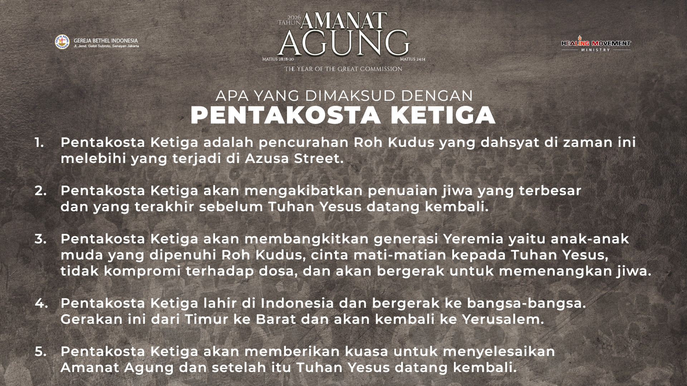

Iman & Pengajaran
Fondasi iman yang kuat membentuk gereja yang kuat.
Rangkuman pengajaran inti yang menuntun pertumbuhan rohani jemaat.

DNA Gereja
Menjadi gereja yang dipenuhi kuasa Roh Kudus, menghidupi kasih, dan melayani dengan hati Kristus.

Lima Arti Pentakosta Ketiga
Nilai inti yang meneguhkan panggilan pelayanan dan pengutusan gereja.
Mazmur 91
Perlindungan Tuhan atas umat-Nya.
Doa Bapa Kami
Teladan doa dari Yesus Kristus.
Visi, Misi, Nilai & Fokus
Visi: Menjadi Gereja yang memuridkan dan memberkati bangsa.
Misi: Mengajarkan kebenaran Firman, membangun komunitas kasih, dan melayani sesama.
Nilai: Kasih, Integritas, Iman, Pelayanan, dan Pengorbanan.
Fokus: Pemuridan, Keluarga, dan Pelayanan Masyarakat.